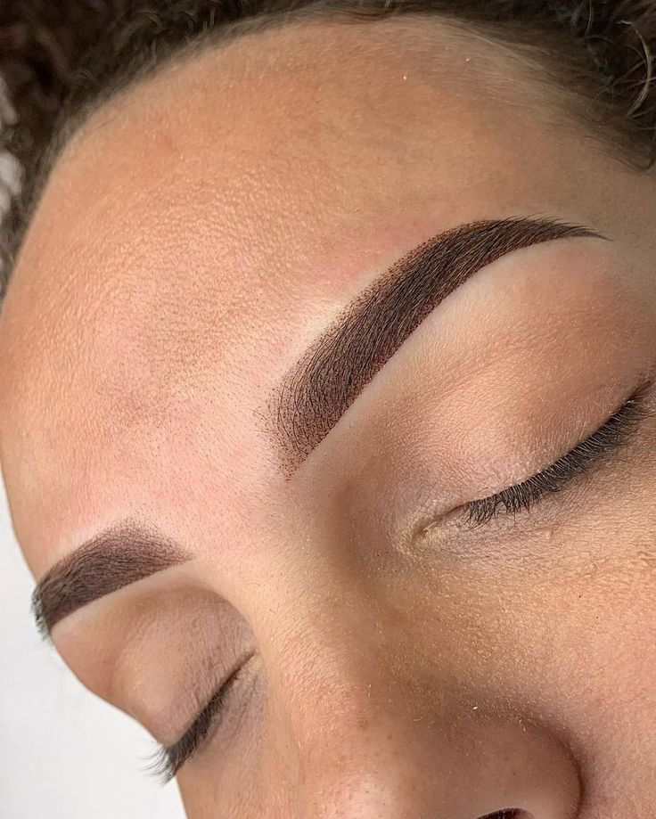
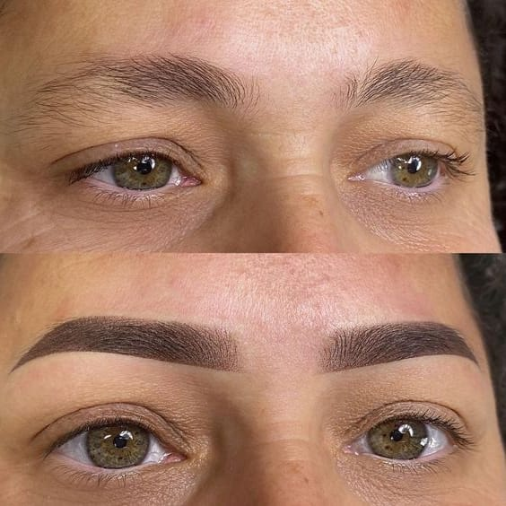
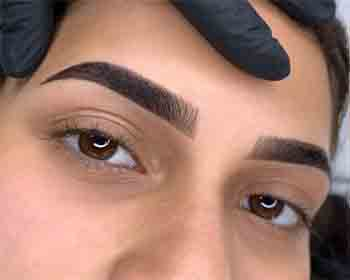
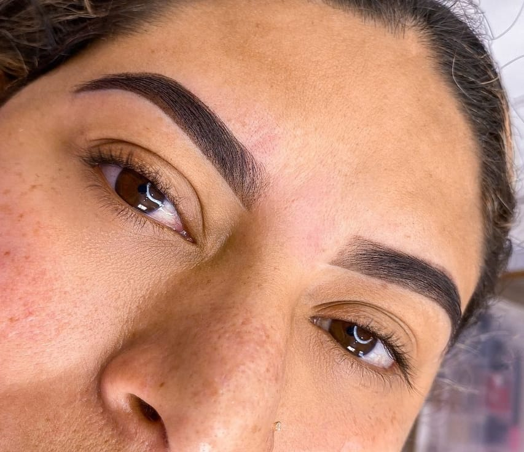
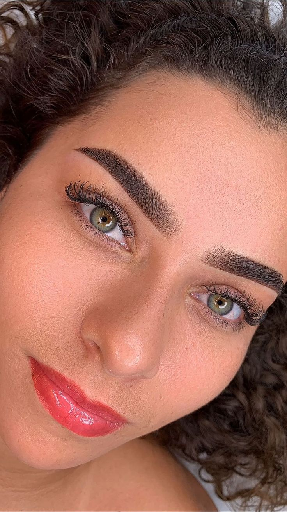

Ariane Duarte, especialista em design de sobrancelhas e apaixonada pelo universo da estética. Encontrei no design uma forma de cuidar, transformar e realçar a beleza natural de cada um, fio a fio, com leveza e delicadeza.
Minha missão é entregar um olhar mais confiante, harmonioso e único, sempre com muito carinho e dedicação. Nossos procedimentos são personalizados, respeitando o que você tem de mais lindo, sua essência e características únicas.
Micropigmentação de Sobrancelhas Shadow
A técnica Shadow proporciona sobrancelhas preenchidas, efeito degradê e acabamento esfumado. Ideal para quem busca definição suave, harmonia facial e praticidade no dia a dia.





